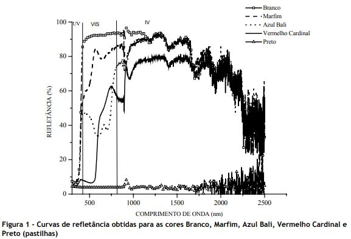

Exercício 1
a)
Refletância: A refletância é a proporção entre fluxo incidente em uma superfície e fluxo refletido. Neste estudo, a refletância de diferentes tintas de exteriores é analisada tendo em vista o impacto térmico nos interiores. Foi feita uma análise com espectrofotômetro para determinar a refletância, e alguns dos resultados foram os seguintes: 
Fóvea: Região da retina onde as lentes projetam o centro da imagem sendo visualizada. Possui a maior concentração de receptores, sendo todos cones, proporcionando o maior detalhamento visual e nitidez da retina. Fonte.
Área V6 do córtex visual humano: Acredita-se que essa região se especializa na detecção de movimentos (embora possam existir outras regiões que também realizam a mesma tarefa), distinguindo tanto o movimento de objetos à distância quanto do próprio corpo. Macacos possuem a área V6 com múltiplas similaridades à dos os humanos. Fonte.
b)
Adaptação ao Brilho: O olho humano possui uma faixa dinâmica de intensidade de luz muito grande. Quando há luz suficiente, a pupila se contrai para que menos luz entre no olho. Além disso, a maior parte da adaptação à diferentes luminosidades se deve à alteração de sensibilidade das células receptoras, processo que não é instantâneo.
Apesar da faixa dinâmica do olho em geral ser grande, monitores e televisões conseguem representar contraste de imagem suficientemente boa pois, uma vez que o olho está adaptado à certo nível de luminosidade, a faixa dinâmica é bastante reduzida
Fonte.
Exercício 2
a)
YCbCr: Este espaço de cores possui alguns usos em Segmentação de Imagens, particularmente utilizando algoritmos baseados em sistemas de inferência Fuzzy. Neste artigo, um método de segmentação de imagens de satélites é proposto. Neste outro artigo, mais um método de segmentação de imagens no espaço de cores YCbCr é proposto, e seu desempenho é melhor quando comparado com a o mesmo método porém utilizando espaço de cores RGB.
b)
HEVC/H.265: Trata-se de um novo padrão de compressão que surgiu em 2013, como uma versão duas vezes mais eficiente do padrão H.264/AVC.
Comparado com o H.264/AVC, o HEVC/H.265 pode entregar:
- Na mesma qualidade, arquivos com metade do tamanho;
- No mesmo tamanho de arquivo, vídeos com qualidade significativamente melhor.
Uma das diferenças entre os dois padrões está no tamanho dessa janela de comparação. Enquanto o H.264/AVC utiliza um tamanho fixo de 16x16 pixels, o HEVC/H.265 utiliza tamanhos de até 64x64. Fonte.